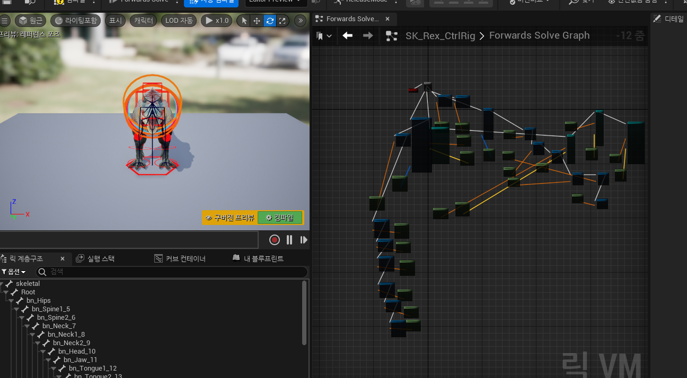
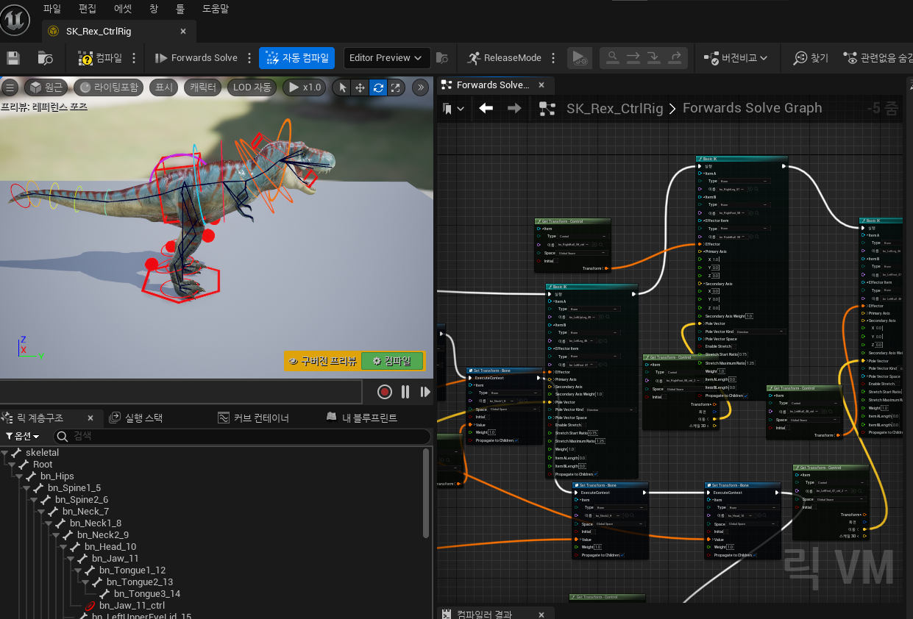

블루프린트 소개
블루프린트는 비주얼 스크립팅 도구로서 복잡한 게임 로직을 간단하게 구현할 수 있는 강력한 도구입니다.
주요 기능
- 비주얼 스크립팅을 통한 빠른 프로토타이핑
- 복잡한 로직을 쉽게 구현
- 디버깅 및 테스트 용이
적용 사례
- 캐릭터 애니메이션
- 게임플레이 메커니즘
- UI 상호작용
블루프린트를 사용한 애니메이션 제작
블루프린트를 사용하여 생동감 있는 캐릭터 애니메이션을 제작합니다.
애니메이션 기법
- 스켈레톤 애니메이션
- 블렌드 쉐이프 애니메이션
- 모션 캡처 데이터 활용
장점
- 직관적인 인터페이스
- 빠른 작업 속도
- 높은 퀄리티의 애니메이션 구현
갤러리
블루프린트를 사용한 다양한 프로젝트 예제를 확인하세요.


